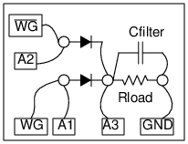

Schematic

- Full wave rectifiers are generally made using the outputs of a transformer with
center tap.
- The voltage waveform at both ends of the transformer is 180 degree out of phase. That means each
diode conducts during the alternate half cycles.
- In this case the 180 degree out of phase waveforms are provided by WG and WG bar.
Instructions
- Connect the diodes, without resistor, and observe the rectified output.
- Add the resitor and see the change in the amplitude.
- Connect capacitor to see the effect of the filter. Change Rc values and repeat.
(Do not use R below 500 Ohm)